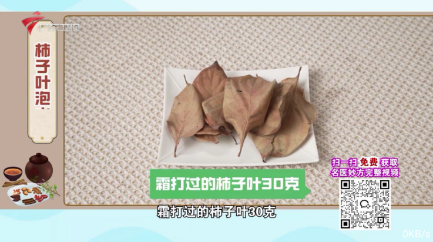
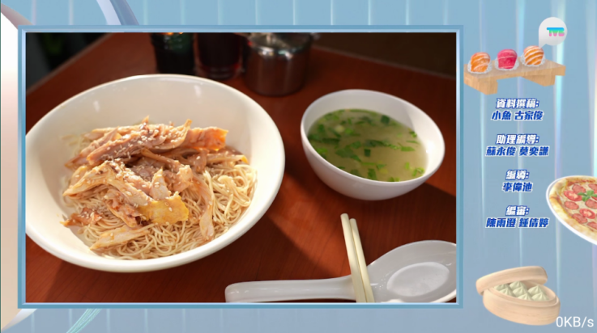

从"一个台"到"一档节目"——MeTV 迭代史里藏着什么产品逻辑
从 v6.1.0 回看 MeTV 的演进路径：它什么时候开始管起了用户"什么时候看什么"，又为什么在"全不行先查网络"这种事上花了这么多心思？
现状：v6.1.0 已经不是那个"换源看直播"的工具了
现在上 MeTV官网 看 v6.1.0 的功能列表，你能感受到它和早期同类产品的明显差别——它不再只是一个"能切换信号源的直播播放器"。节目预告覆盖到未来若干小时，对感兴趣的节目可以直接点预约，到点自动推通知甚至自动跳台；错过了也不怕，7 天回看把最近一周的节目都兜住了。看直播时某一路源卡了，另一路源秒切无缝衔接，连个缓冲黑屏都尽量省掉。

但我写这篇不是为了列功能清单——真正有意思的是：这些功能不是同时冒出来的，它们之间藏着一条清晰的产品演进线。
来路：样本文档没提的恰恰说明……
去 MeTV文档 翻了一下，唯一明确标注版本号的就是 v6.1.0。更早的历史官方没细说，官方下载只提供 v6.1.0 这一版的安装包，但从现有功能的"新旧分层"能反推一些东西。
最底层的"换源看直播"——这肯定是 MeTV 最早就有的核心能力，也是同类 IPTV 客户端的入场券。没有这个，后面的一切都无从谈起。但光有换源不够，用户会碰到一个经典问题：所有频道都打不开的时候，到底是 App 坏了还是自己网络有问题？
"全不行先查网络——手机热点一秒分出是谁的锅"这篇老用户经验的存在，本身就说明 MeTV 团队意识到了这个困惑不是个别现象。他们没有硬加一个"网络自检"按钮（那是系统该干的事），而是在文档里把"手机热点测试法"写成了标准化的 30 秒排查流程。这个动作很产品——不碰用户的系统权限，只教一个零成本的判断方法。
然后就是节目预告和预约。这两个功能的出现标志着 MeTV 从"被动观看"转向了"主动排期"——用户不再是"打开看看有什么"，而是"我想看今晚 8 点那档综艺，帮我记着"。预告数据来源于频道本身的 EPG，不同频道更新精度不同，央视和卫视准，地方台可能滞后——MeTV 没有吹"我的预告 100% 准确"，而是坦诚告诉用户"不准不是我的问题，是上游没给准"。这种克制在同类产品里不常见。

规律：团队一直在死磕什么、什么一直没碰
从现有功能反推迭代节奏，我看到两条非常稳定的优先级线索。
第一条，死磕"看到"的确定性。多源切换解决了"这一路源卡了"，7 天回看解决了"错过了"，预约提醒解决了"忘了看"，手机热点排查解决了"全不行的时候分不清是谁的锅"——所有新增功能都围绕同一个核心问题：让用户在"想看"这个时刻，尽可能不被非内容因素打断。这不是什么高大上的产品战略，就是朴素地解决 IPTV 用户最常抱怨的几个痛点。
第二条，一直没碰的东西反而更值得注意。MeTV 到现在也没做个性化推荐——没有"猜你喜欢"、没有"基于你的观看历史推荐频道"。它也没做社区、没做弹幕、没做任何用户生成内容相关的东西。连收藏功能都保持在"标记一个台/节目"的极简状态，没有社交属性、没有云端同步的宣传。
这说明 MeTV 的团队非常清楚自己的边界：他们做的是一个看电视的工具，不是一个内容平台，也不是一个社区。这个定位从早期版本延续到 v6.1.0 都没变过——迭代只是让"看电视"这件事本身变得更稳定、更省心，而不是往里面塞更多内容。
预判：照这个路线，下一步大概率走向哪
从迭代规律推，MeTV 未来几个版本的方向不会跳脱"让看到这件事更省心"的框架。
一个比较确定的猜测是回看时长的扩展——现在是 7 天，如果上游 EPG 数据允许，往 14 天甚至更长走是顺理成章的事。另一个可能是预约功能的增强——现在是"到点通知跳台"，未来可能支持"自动录制"或者"多期连约"（比如追一整季综艺，不用每期单独点）。
但我不太相信它会在短期内做个性化推荐或者社区功能——那完全是另一个产品方向，需要的资源和 MeTV 当前的团队能力也不匹配。
至于有没有什么"憋了好几个版本的大功能"藏在 v6.1.0 之后的路线图里，目前看不太出来。MeTV 的迭代节奏一直比较稳，没有那种突然跳级的大版本颠覆——它更像是在同一条路上不停地铺砖，每一块砖都解决一个具体的小痛点。
写在最后
写这篇版本史的时候我才意识到，MeTV 的迭代逻辑其实和很多成功的工具产品是通的：先把一件事做扎实，然后围绕这件事的用户抱怨一点点补。换源做扎实了，用户抱怨"全坏了不知道是我还是它"，就加热点排查的引导；换源加预告了，用户抱怨"忘了看"，就加预约提醒；预约加了，用户抱怨"错过了怎么办"，就加 7 天回看。每一步都不是什么革命性的创新，但每一步都让"打开 MeTV 看电视"这件事变得更顺畅。
这类产品最不讨巧——没有炫功能的发布会，没有社交媒体上的话题点，但用户就是会在一个又一个小细节里感受到"这个 App 懂我在烦什么"。
MeTV 的资料在 GitHub、Gitee、GitCode 三个仓库都有维护，国内访问走 Gitee 或 GitCode 更顺手。